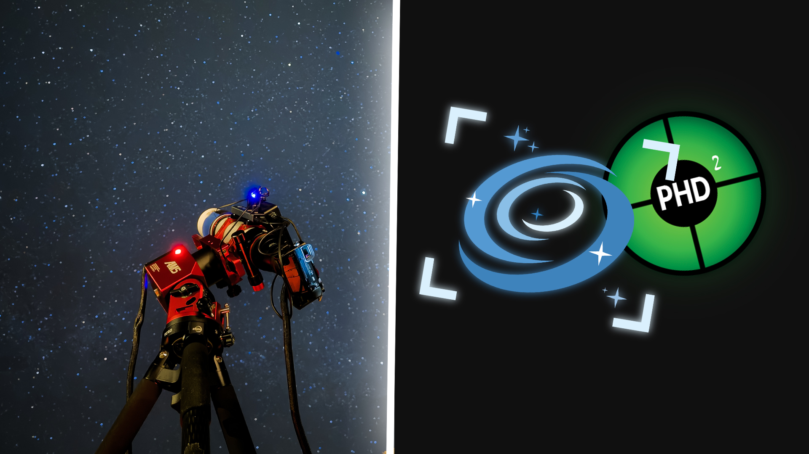

Sleep While Using Your Telescope: A Guide to NINA

This guide covers building NINA sequences that handle target acquisition through shutdown, manage failures automatically, and let you sleep while imaging.
Prerequisites: You should know how to connect your equipment to NINA and run a basic sequence. This guide focuses on building reliable, unattended automation.
What NINA Does
NINA is sequencing software. It controls your mount, camera, focuser, filter wheel, and guider to execute a defined plan.
The Advanced Sequencer uses three container types:
- Sequential containers execute instructions top to bottom
- Parallel containers run multiple instructions simultaneously
- Deep Sky Object containers hold target-specific coordinates and settings
Within containers, you add instructions (commands), triggers (event-driven actions), and loop conditions (criteria for when to continue or stop).
Critical Components for Automation
Triggers: Event-Driven Actions
Triggers fire automatically when conditions are met. They evaluate after every instruction and execute without stopping the sequence.
- AF After HFR Increase Monitors star sharpness and refocuses automatically when HFR exceeds your threshold.
- AF After Temperature Change Refocuses when ambient temperature shifts.
- Center After Drift Plate solves periodically and recenters if the target drifts.
- Meridian Flip Handles flips when crossing the meridian.
- Settle Before Exposure Waits for guiding to stabilize before exposures.
- Restore Guiding Automatically restarts guiding if it stops.
Loop Conditions: When to Continue
Loop conditions determine whether a container repeats. Multiple conditions stack (all must remain true).
- Loop Until Time: Stops at Nautical Dawn or Astronomical Dawn.
- Loop While Altitude Above Horizon: Stops when the target drops below your horizon limit.
Example: Loop Until Time (Nautical Dawn) AND Loop While Altitude Above Horizon.
Filter Offsets
Filter offsets let NINA adjust focus instantly when switching filters. Use the Filter Offset Calculator plugin to set this up once and save time.
Target Sequence Structure
Here’s how I structure my LRGB target sequences:
- Global Trigger: Meridian Flip
- Target-Level Triggers: Restore Guiding, Center After Drift, AF After Temp Change, AF After HFR Increase
- Loop Conditions: Until Nautical Dawn, While Altitude Above Horizon
- Instructions: Wait until above horizon, Run Autofocus, Slew and Center, Set Tracking, Start Guiding
- Imaging: LRGB exposures with dithering

Key Design Decisions
- 3L : 1R : 1G : 1B ratio for efficiency
- Single dither after a full filter cycle
- Filter rotation to distribute exposures
- Smart Exposure over Take Exposure for reliability
Startup & Shutdown
- Startup: Cool camera, unpark mount, connect to PHD2, run checks
- Shutdown: Stop guiding, warm camera, park mount, disconnect equipment
Advanced: Target Scheduler Plugin
For complex multi-target sessions, the Target Scheduler plugin can select optimal targets automatically.
Safety for Unattended Operation
- Weather Monitoring: Add Loop While Safe
- Hardware Safety: Use limit switches/safety relay
- Error Handling: Define retries and fallback behavior
- Remote Access: AnyDesk, TeamViewer, Ground Station plugin
Common Failures and Fixes
- Autofocus inconsistent → check step size, use Hocus Focus
- Target drifts despite guiding → add Center After Drift, verify PHD2, balance mount
- Filter changes cause guide star loss → disable guiding during filter change, restore guiding
- Sequence stops unexpectedly → check loop conditions, USB reliability, NINA logs
Essential Plugins
- Hocus Focus
- Filter Offset Calculator
- TPPA (Three Point Polar Alignment)
- Advanced Sequencer Validator
- Ground Station
- Discord Alert / Pushover
Building Reliable Automation
Start simple. Build one working target with basic triggers and loop conditions. Once solid, add complexity. Test failures (disconnect USB, cover guide scope, etc.) until your sequence recovers reliably.